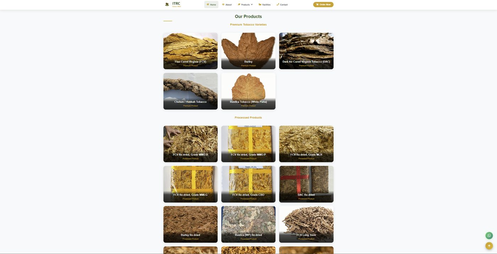
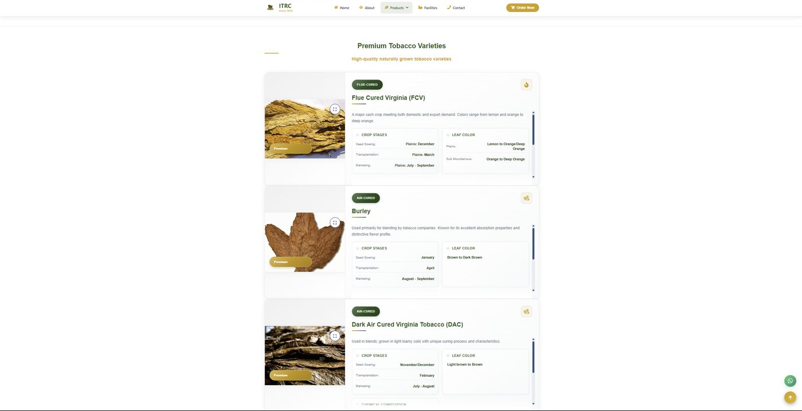
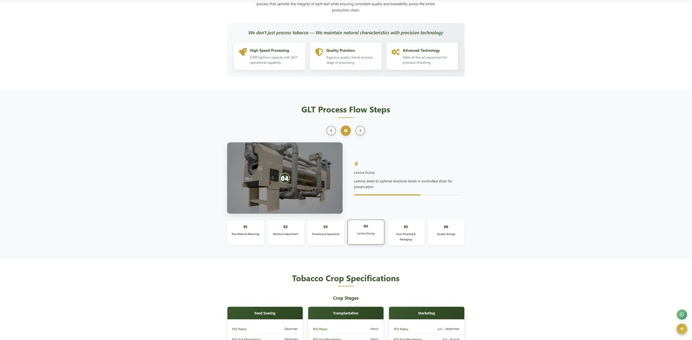
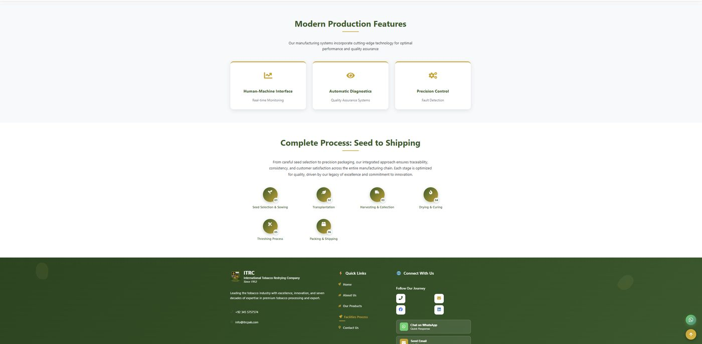

Bachelor of Computing Co-op Work Term Report
Building Digital Solutions for a Manufacturing Business
This is a record of my Summer 2026 co-op work term as a Software and Web Development Co-op Student, completed remotely with International Tobacco Redrying Company in Khyber Pakhtunkhwa, Pakistan, from May 1 to August 31, 2026. Over four months I worked across web development, internal tools, operational data, and reporting — supporting a business that grows, cures, processes, and exports tobacco. This report walks through what I worked on, what I learned about building software for a real business, and how I grew as a developer along the way.
International Tobacco Redrying Company
International Tobacco Redrying Company (ITRC) grows, cures, processes, and exports tobacco products for domestic and international markets. Its operations span multiple stages of the tobacco supply chain, from crop development and processing through packaging and export, covering varieties such as Flue-Cured Virginia, Burley, Dark Air-Cured Virginia, and Rustica.
A business operating across that many stages depends on more than agriculture. Organizing operational data, tracking a multi-stage manufacturing process, presenting product information clearly to customers, and providing staff and management with useful dashboards and reports are all areas where computing can support the business — which is where my work term came in.
My Role
I worked as a Software and Web Development Co-op Student. My responsibilities covered several technical and operational areas, with my work varying according to the company's current needs and priorities.
Web development & maintenance
Contributing to and maintaining company web pages and product-facing content.
Internal software tools
Supporting internal tools used for day-to-day operations.
Operational & business data
Organizing business and production data so it was easier to use and understand.
Databases
Working with the databases that stored that data.
Dashboards & reporting
Contributing to dashboards and reports used to track operations.
Document digitization
Converting paper-based records and documents into digital form.
Testing & debugging
Testing software and website functionality, identifying issues, and helping resolve them.
Technical documentation
Writing documentation that explained how systems worked and how to use them.
My Software Engineering coursework gave me a foundation in programming, problem solving, and working with structured data. During the work term, I learned how to apply those skills in a business environment where requirements were less defined and solutions had to account for real operational needs.
Featured Work
ITRC's public website is where a lot of this work becomes visible. The screenshots below are examples of the kind of structured, content-heavy web interfaces I worked with during my term — presenting product information and manufacturing processes clearly for people outside the company.

Product catalogue
Organizing many product variants at a glance
ITRC's catalogue presents both premium tobacco varieties and dozens of processed grades in a browsable grid. This kind of catalogue reflects the type of structured, image-heavy product content I worked with — organizing many product variants so a visitor can scan and compare them quickly.

Product detail
Turning agricultural data into clear web content
Each tobacco variety page breaks down agricultural information — crop stages, leaf colour, chemical composition — into a consistent, scannable structure. Translating detailed technical and agricultural data into clear web content, the way this page does, is representative of the kind of content-organization work I contributed to.

Production overview
Explaining an operational process to a general audience
This section presents the company's manufacturing capabilities alongside a six-stage overview of production, from seed selection to packing and shipping. Presenting an operational process this clearly overlaps with the reporting and dashboard work I did internally.

Process visualization
Making a multi-stage process easy to follow
An interactive, six-step breakdown of the tobacco re-drying process, from raw material receiving through lamina drying to quality storage. Visualizing a multi-stage industrial process step by step — similar to work I did with internal dashboards and reporting — makes an otherwise complex operation easy to follow.
Goals & Learning Outcomes
I set five learning goals at the start of the term. Here's what each one looked like in practice.
-
01
Problem Solving
Goal. Get better at independently solving technical and operational problems while building software and web systems.
What I did. I debugged software issues, tested website functionality, and worked through database and internal-tool problems as they came up — researching first, and asking for guidance when I needed it.
What improved. I relied on help less over time and started breaking bigger problems into smaller, manageable pieces before diving in.
What I learned. How troubleshooting actually works in a professional setting, and how to think through a problem methodically instead of guessing.
-
02
Technological Literacy
Goal. Build stronger, more practical experience with programming, databases, and web development tools used in a real business.
What I did. I worked directly with the company's software and web systems, picked up new tools and workflows as needed, and contributed to website updates, database organization, and reporting.
What improved. Tasks that felt unfamiliar at the start became routine, and I needed less supervision as my understanding of the systems grew.
What I learned. Technical skills a classroom can't fully teach — how existing systems are actually maintained and extended, not just built from scratch.
-
03
Written Communication
Goal. Write clearer, more organized technical documentation and updates that both technical and non-technical people could use.
What I did. I documented software updates, troubleshooting steps, and workflows throughout the term, and revised my writing based on feedback.
What improved. My documentation became more consistent and easier for someone else to follow without me explaining it in person.
What I learned. How much clarity matters in technical writing, and how to write for a reader who wasn't there when the work happened.
-
04
Organization & Time Management
Goal. Manage multiple assignments and deadlines more effectively without letting quality slip.
What I did. I prioritized tasks by urgency, kept project files and notes organized, and adjusted my schedule when priorities shifted.
What improved. I became more consistent at balancing overlapping responsibilities while keeping my work organized and meeting deadlines.
What I learned. How important structure is once there's no single deadline dictating the day — and how to build my own.
-
05
Oral Communication
Goal. Communicate more confidently and clearly about technical work with supervisors and coworkers.
What I did. I gave updates on my progress, asked questions when something was unclear, and explained technical decisions during discussions.
What improved. I got more comfortable speaking up in meetings and explaining my reasoning, not just describing what I'd done.
What I learned. That communicating well about technical work is its own skill, separate from doing the technical work itself.
Professional Growth & Reflection
My supervisor's evaluation described consistently high-quality, accurate work across development, dashboards, data management, and documentation, along with strong productivity and organization. That matches how the term felt from my side — most of my growth wasn't about learning new syntax, it was about learning to manage many small responsibilities at once without letting any of them slip.
The evaluation also noted growth in independent decision-making — being able to analyze a problem, weigh options, and troubleshoot without waiting for direction, while still knowing when to ask for clarification. As the term progressed, I became increasingly comfortable making technical decisions independently while recognizing when clarification was necessary.
Communication and working with others were also highlighted, particularly around understanding what different departments actually needed before building anything. That lines up with one of the bigger lessons of the term:
A technical solution is only useful if it fits the business problem behind it.
Figuring out that problem often took more conversation than code.
Overall, the term was rated as outstanding, and initiative and reliability came up specifically. My evaluation also highlighted my initiative in identifying opportunities where technology could improve existing processes and my willingness to take ownership of additional responsibilities. Being trusted with that kind of latitude, and gaining more independence over four months, is the part of this work term I think will matter most going forward.
More broadly, this work term gave me a much clearer picture of how software engineering actually functions inside a business — less about writing code in isolation, and more about improving real operations: organizing data that already exists, making processes visible through dashboards, and replacing manual, paper-based steps with something more reliable.
Tools & Technical Skills
My work spanned several technical areas rather than a single technology stack, reflecting the varied needs of the organization.
Web Development
Contributing to and maintaining web content and site functionality.
Data & Database Management
Organizing business and operational data, and working with the databases that stored it.
Reporting & Dashboards
Supporting dashboards and reports used to track operations.
Testing & Debugging
Testing software and web functionality and resolving issues.
Document Digitization
Converting paper-based records into digital form.
Technical Documentation
Writing documentation that explains how systems and workflows function.
Key Takeaways
Coming into this work term, most of what I knew about software engineering came from assignments with a defined scope and a right answer. ITRC gave me the other half: figuring out what a business actually needs before writing anything, working with data and systems that already existed, and making changes that had to hold up in daily use, not just pass a test case.
I also became noticeably more independent. As the term progressed, I became more comfortable troubleshooting problems, making technical decisions, and managing my own workload, and my supervisor's evaluation reflected that same shift.
Technically and professionally, I'm leaving this term more comfortable with databases, web development, documentation, and the important supporting work of organizing, documenting, and reporting on the data a business depends on. I expect the habits I built here — asking about the business problem first, documenting as I go, and treating testing as part of the job rather than an afterthought — to carry directly into future work terms and, eventually, into how I approach software engineering as a career.
Acknowledgments
Thank you to International Tobacco Redrying Company for the opportunity to work on real systems during this term, and to my supervisor, Javid Rasul, for his guidance, feedback, and trust throughout the placement.